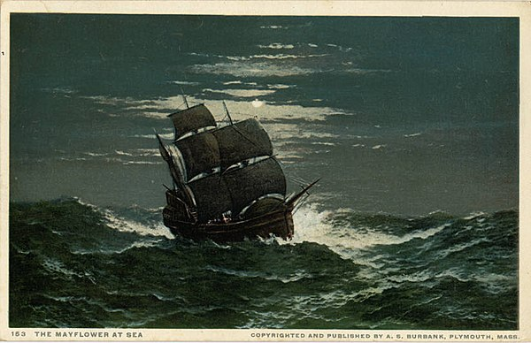

MayflowerMayflower was an English ship that transported a group of English families, known today as the Pilgrims, from England to the New World in 1620. After a grueling 10 weeks at sea, Mayflower, with 102 passengers and a crew of about 30, reached what is today the United States, dropping anchor near the tip of Cape Cod, Massachusetts, on November 21 [O.S. November 11], 1620. Differing fromasdasd their contemporaries, the Puritans (who sought to reform and purify the Church of England), the Pilgrims chose to separate themselves from the Church of England, which forced them to pray in private. They believed it was beyond redemption due to its resistance to reform and Roman Catholic past. Starting in 1608, a group of English families left England for the Netherlands, where they could worship freely. By 1620, the community determined to cross the Atlantic for America, which they considered a "new Promised Land", where they would establish Plymouth Colony.[1]: 44 The Pilgrims had originally hoped to reach America by early October using two ships, but delays and complications meant they could use only one, Mayflower. Arriving in November, they had to survive unprepared through a harsh winter. As a result, only half of the original Pilgrims survived the first winter at Plymouth. If not for the help of local indigenous peoples to teach them food gathering and other survival skills, all of the colonists might have perished. The following year, those 53 who survived[2] celebrated the colony's first fall harvest along with 90 Wampanoag Native American people,[3] an occasion declared in centuries later the first American Thanksgiving.[4] Before disembarking the Mayflower, the Pilgrims wrote and signed the Mayflower Compact, an agreement that established a rudimentary government, in which each member would contribute to the safety and welfare of the planned settlement. As one of the earliest colonial vessels, the ship has become a cultural icon in the history of the United States.[5] |
|